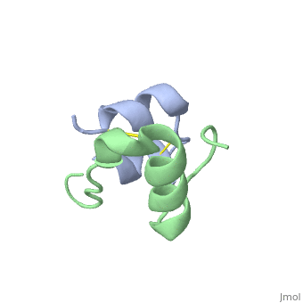

What are Proteins?
Proteins are large, complex molecules made up of amino acids. They are essential for the structure, function, and regulation of the body's tissues and organs.
Structure of Proteins
- Primary structure: Sequence of amino acids
- Secondary structure: Alpha helices and beta sheets
- Tertiary structure: 3D folding of the protein
- Quaternary structure: Association of multiple polypeptides
Functions
- Build and repair body tissues
- Enzymes (e.g., amylase, protease)
- Hormones (e.g., insulin)
- Transport (e.g., hemoglobin)
Examples
- Meat
- Eggs
- Milk
- Pulses
- Fish